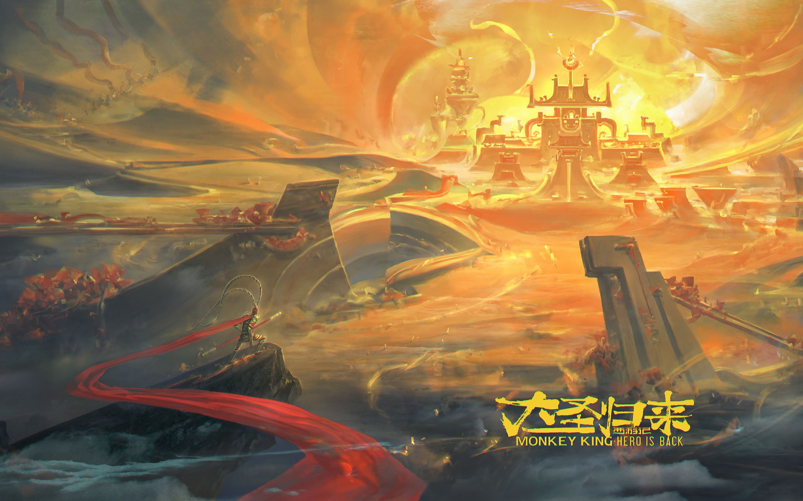
齐天大圣
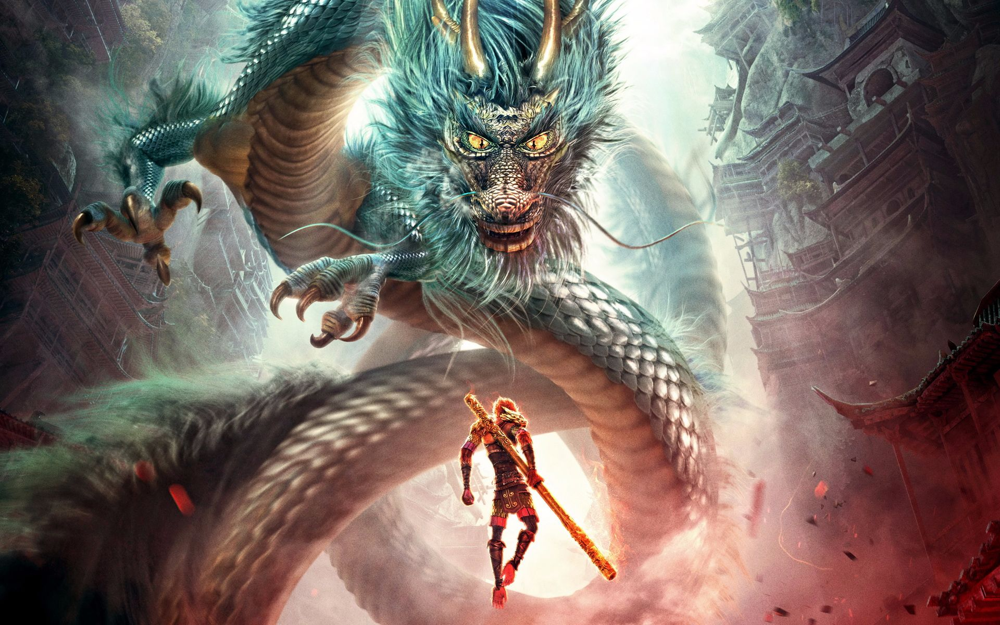
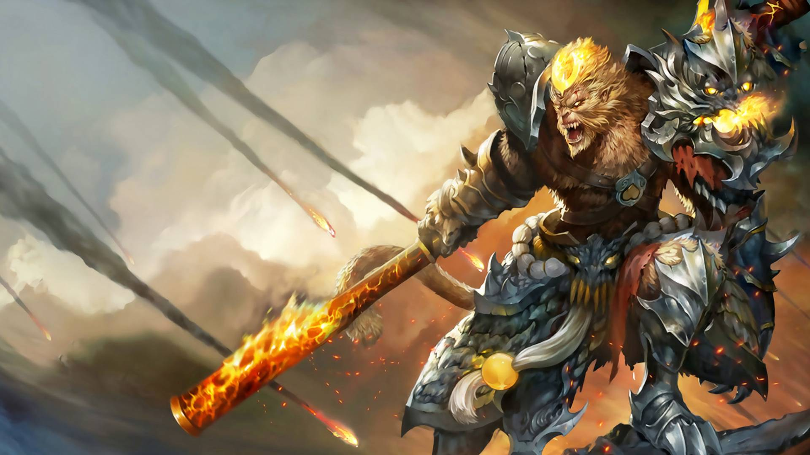
 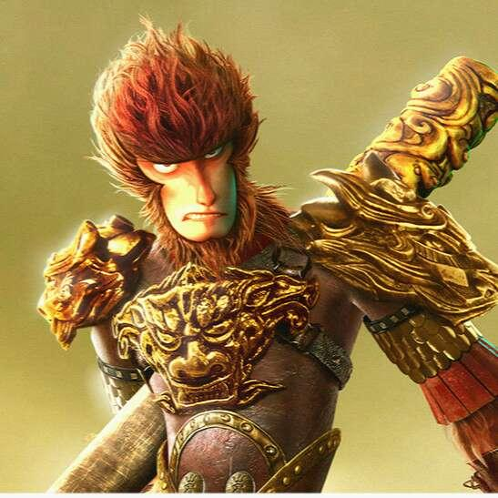
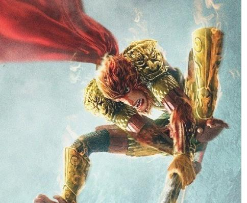
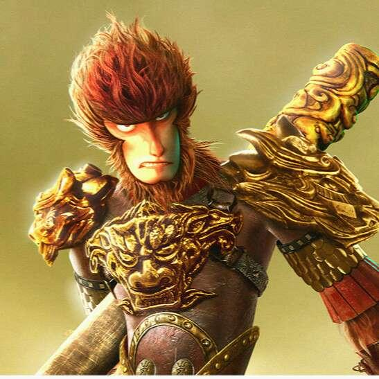
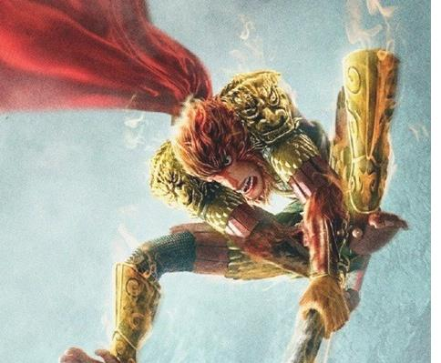
 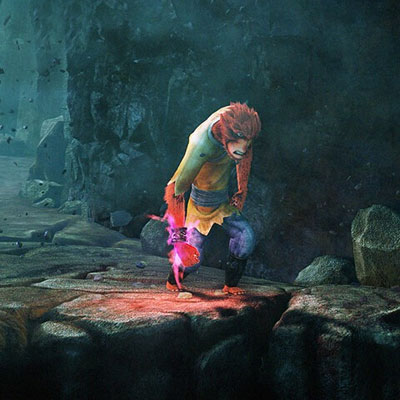
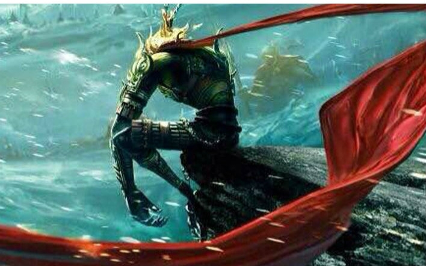
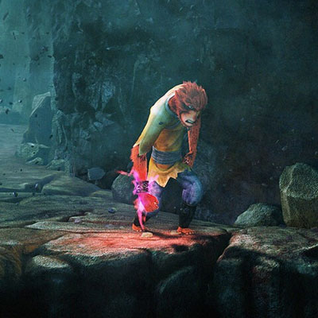
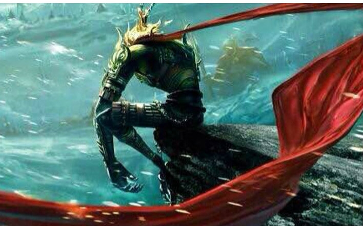
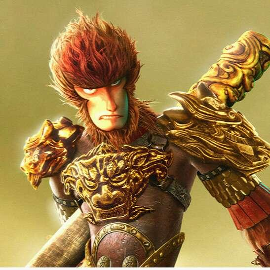
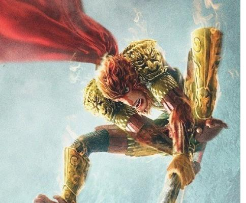
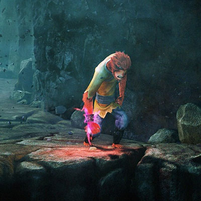
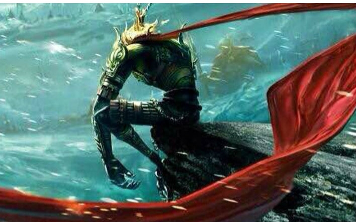
我像一个优伶，时哭时笑着，久而久之，也不知这悲喜是自己的，还是一种表演，很多人在看着我，他们在叫好，但我很孤独，我生活在自己的幻想中，我幻想着我在一个简单而又复杂的世界，那里只有神与妖，没有人，没有人间的一切琐碎，却有一切你所想象不到的东西。但真正生活在那里，我又孤独，因为我是一个人
若天压我，劈开那天，若地拘我，踏碎那地，我等生来自由身，谁敢高高在上.负尽千重罪，炼就不死心.人生没有什么会永远不失去的，可是有的人不相信，所以他们会不停的寻找，找一辈子.你错了。我不是忘记一切，我是一无所有.待至英雄们在铁铸的摇篮中成长,勇敢的心像从前一样,去造访万能的神柢,而在这之前,我却常感到,与其孤身跋涉,不如安然沉睡.对我来说，任何一个地方都是家。可有的人却把家放在世界某一个地方，所以他们才会找不到，才会死在路上。
我愚蠢的以为，头上的金箍圈可以圈住我的爱，可惜我手中的金箍棒改变不了那个开始，也决定不了这个结局，根本没有齐天大圣，我只是一只猴子。
喜欢一个人需要理由吗？ 需要吗？ 不需要吗？需要吗？
曾经有一份真挚的感情摆在我的面前我没有珍惜，等我失去的时候才追悔莫及，人间最痛苦的事莫过于此，你的剑在我的咽喉上刺下去吧，不用在犹豫了！如果上天能给我一次再来一次的机会，我会对哪个女孩说三个字：我爱你，如果非要在这份爱上加一个期限，我希望是一万年！
噢，怪不得我长久以来都在做同样一个噩梦。在一片漆黑孤独的环境里面，一对对非常色迷迷的眼睛一直在盯着我看，看得我非常不好意思。就是你这种眼神，有好几次还盯得我脸都红了。原来注定我今天要撞妖。
上天既然安排他拔出我的紫青宝剑，他一定是个不平凡的人，错不了！我知道有一天他会在一个万众嘱目的情况下出现，身披金甲圣衣，脚踏七彩云来娶我！